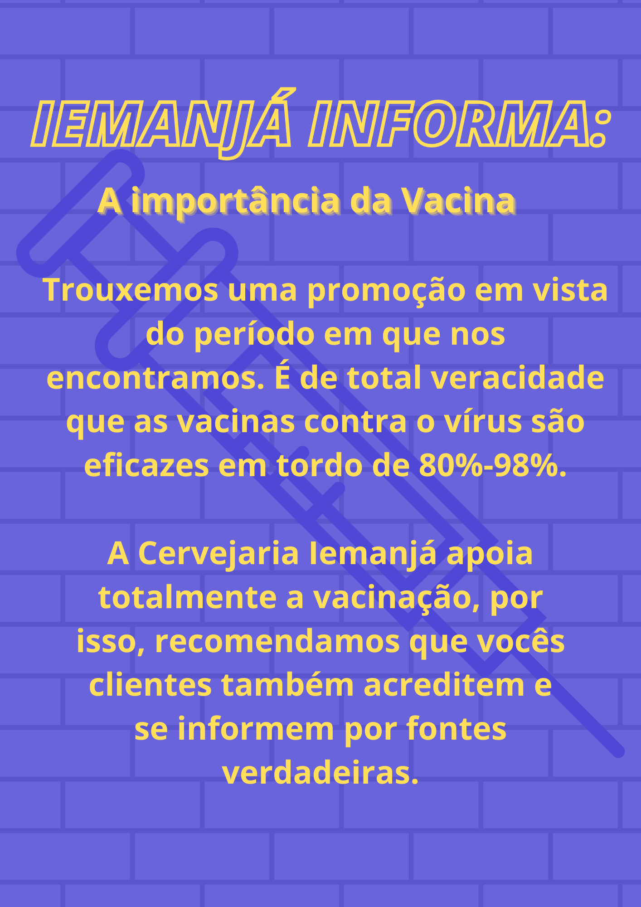

Campanha de vacinação
Trabalho focado na conscientização sobre a vacina através de posts

Artigos MDC
Artigos Midiáticos de Divulgação Científica
Saúde mental dos adolescentes – Um assunto preocupante
Ana Carolina Ferreira
⠀⠀⠀⠀⠀⠀⠀⠀⠀No final do ano de 2019, um vírus recém-descoberto, chamado covid-19, começou a se espalhar, e em poucos meses o mundo todo parou. Em estado de pandemia, o ideal foi o isolamento social, a fim de se proteger do tal vírus. Chamamos isso de quarentena, mas não foram nem perto de 40 dias em isolamento. Hoje, aqui no Brasil estamos há 1 ano e 5 meses nessa situação. E isso não só afetou na rotina das pessoas, mas também a saúde mental de grande parte da população, principalmente os adolescentes.
Uma pesquisa do instituto YoungMinds, organização não-governamental pela saúde mental dos jovens, mostrou que a pandemia está tendo um efeito profundo em jovens com questões ligadas a saúde mental. Embora entendam a necessidade das medidas de isolamento social, diz a pesquisa, isso não diminuiu o impacto em sua saúde.
A quarentena foi prejudicial para a educação de grande parte desses jovens, pois muitas escolas que dependem do governo não tiveram condições de distribuir atividades para os alunos, e mesmo os que estudavam em escolas com acesso as aulas a distância encontraram grandes dificuldades de se adaptar nesse novo estilo de educação. E isso afetou a saúde não só mental, mas também física. Muitos dos que participaram da pesquisa do instituto YoungMinds relataram aumento da ansiedade, problemas para dormir, ataques de pânico ou maior desejo de se automutilar.
Projetos como o “Promover para Prevenir em Saúde Mental de Adolescentes”, são essenciais num momento como esse, tanto para introduzir o assunto para as famílias e professores desses adolescentes, quanto para promover a procura de ajuda profissional.
“Preservar a saúde mental é um direito de cada adolescente ou jovem que tem sido duramente afetado pela pandemia. É essencial investirmos em ações e programas em que possam falar, ser ouvidos e sair fortalecidos”, aponta Joana Fontoura, especialista da área de Desenvolvimento e Participação de Adolescentes do UNICEF.
Promover para Prevenir é uma iniciativa da Associação pela Saúde Emocional de Crianças – Asec Brasil|Movimento Saber Lidar, em parceria com o UNICEF, que foca no fortalecimento socioemocional e engajamento de adolescentes, jovens e profissionais da rede apoio psicossocial, promovendo cuidados com a saúde mental e o bem-estar em tempos de pandemia de Covid-19.
“Durante o projeto Promover para Prevenir, mais de 1.000 adolescentes e jovens participaram do Caixa de Ferramentas, encontros com rodas de conversa estruturadas para promoção de saúde mental, receberam orientação, apoio e materiais motivadores, gerando oportunidades para o fortalecimento psicossocial, bem-estar físico e psicológico de si mesmo e de seus pares durante medidas de isolamento imposto pela pandemia e retorno às atividades presenciais. Ao mesmo tempo, mais de 1.400 profissionais de Saúde, Educação e Assistência Social do Espírito Santo, Rio de Janeiro e São Paulo receberam capacitação em saúde mental de adolescentes e sobre a rede de apoio psicossocial. A iniciativa com os jovens foi acompanhada e está sendo avaliada academicamente por uma Equipe do LinhaLab.org conectado à Escola Bahiana de Medicina e Saúde Pública” (Barbosa, Mayara 2021)
Procurar ajuda é a melhor solução para as doenças mentais, que diferente do covid-19, não tem vacina. Não há vergonha nenhuma nisso, e precisa-se quebrar a visão de que psicólogos não são algo positivo. Lidar com emoções não é nada fácil, então não é preciso passar por isso sozinhos e sem ajuda.
.jpeg)